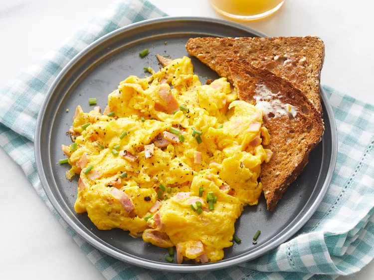

Best Scrambled Eggs

Easy, creamy and wonderful!
This best scrambled egg recipe took a bit of tweaking, but I've finally made the best scrambled eggs ever! My friends and family love it. I make it almost once a week.
Ingredients
- 2 large eggs
- 2 thin slices cooked ham, diced (Optional)
- 2 tablespoons sliced Cheddar cheese
- 1 teaspoon heavy whipping cream
- ½ teaspoon butter
Making process
- Whisk eggs in a small bowl until smooth.
- Mix in ham, Cheddar cheese, and heavy cream.
- Melt butter in a skillet over medium heat.
- Pour in egg mixture.
- Cook and stir until set but still moist, 3 to 5 minutes.